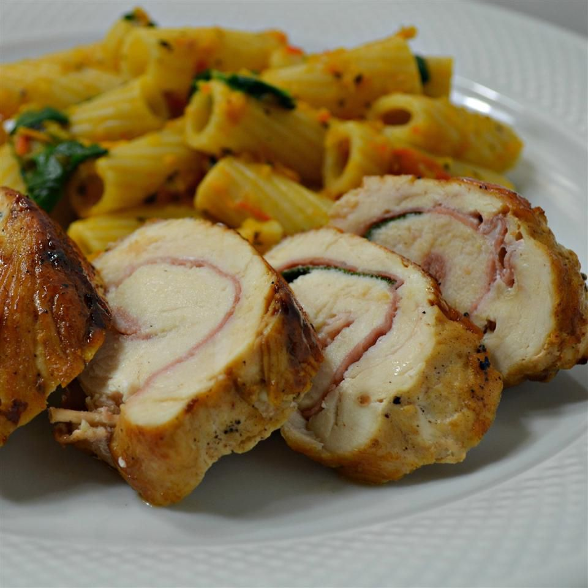

Saltimbocca di Pollo alla Romana (Prosciutto-Stuffed Chicken Breast Roulades)

Known as saltimbocca alla romana, these delicious prosciutto-stuffed chicken breasts are a tasty second course.
Traditionally made with veal, and called saltimbocca alla Romana, this chicken saltimbocca is a restaurant quality dish that can be on the table in under 30 minutes.
Pronounced “salt-im-bokka”, this dish is Italian cooking simplicity at it’s best. Take a few simple, every day ingredients and prepare to be wowed by this amazing restaurant quality dish.
Ingredients:
These are the ingredients you'll need to make this Saltimbocca di Pollo alla Romana recipe:
- 4 skinless, boneless chicken breast halves, pounded to an even thickness;
- 4 slices prosciutto;
- 4 fresh sage leaves;
- 1 tablespoon butter;
- 3 fluid ounces dry white wine, or more as needed;
- 1 pinch salt;
- freshly ground black pepper to taste.
Steps for the recipe:
- Place chicken breasts onto a sheet of parchment paper. Place a prosciutto slice and a sage leaf onto each breast. Roll chicken from the short end over prosciutto and secure with wooden skewers.
- Melt butter in a skillet over medium-high heat. Add rolled chicken and cook until well browned, 2 to 3 minutes per side. Add wine, salt, and pepper; cook until chicken is no longer pink in the center, 8 to 10 minutes. An instant-read thermometer inserted into the center should read at least 74 degrees C. Let rest for 5 minutes before serving.
Editor's Note:
To make the magazine version of this recipe, while the chicken rests, let the pan juices simmer until slightly reduced, about 3 minutes. Garnish the chicken with herbs and serve with the pan juices. If desired, serve over lightly seasoned orzo.